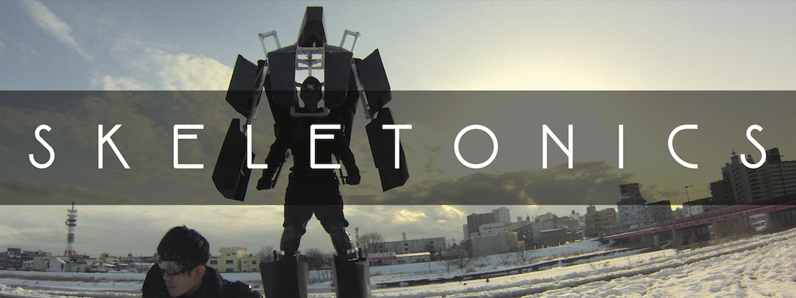
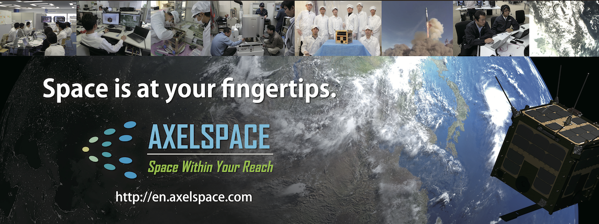
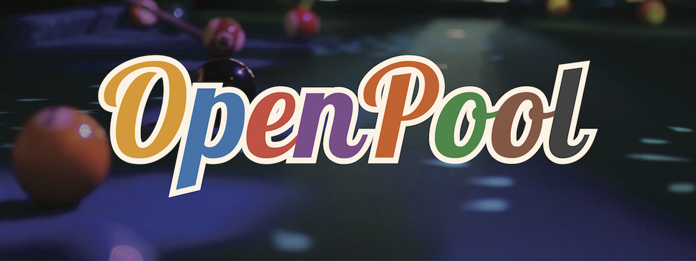
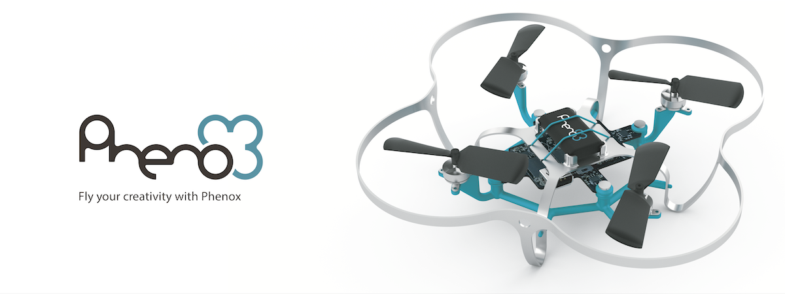
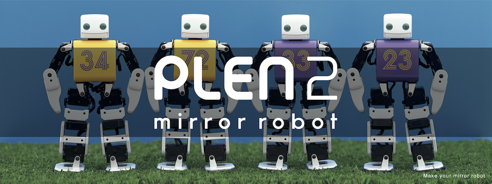
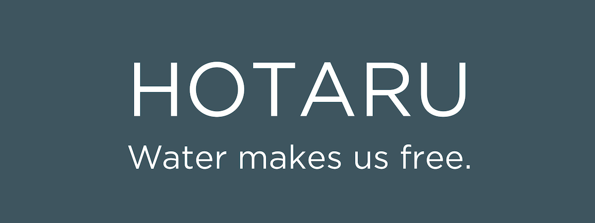
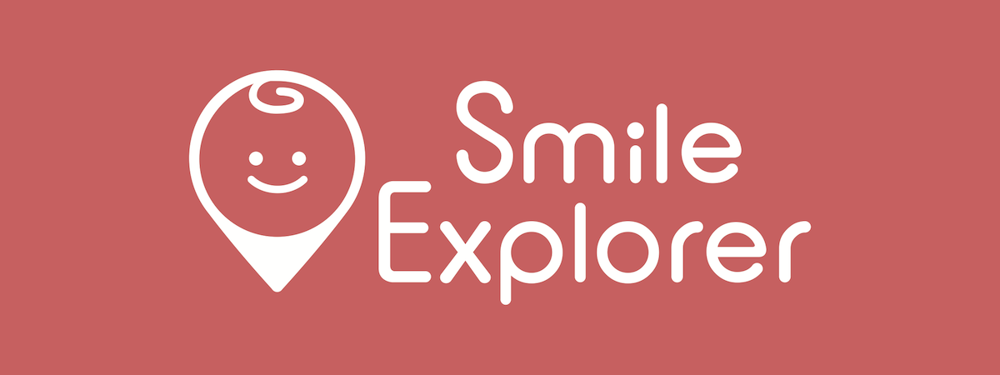
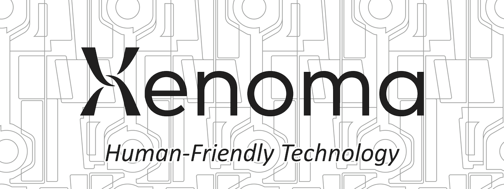
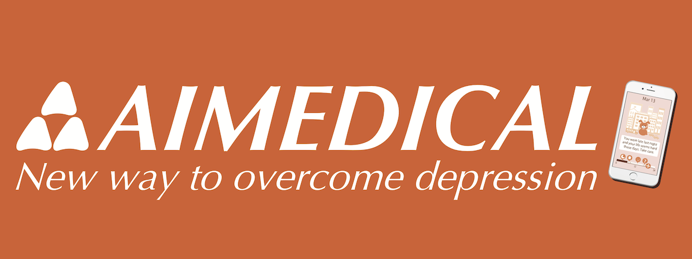

ABOUT TODAI TO TEXAS
Todai to Texasは、東京大学の在学生・研究者・卒業生を中心としたプロジェクトチームやスタートアップが、SXSW (サウス・バイ・サウスウエスト) という毎年3月に米国テキサス州で開催される大規模イベントに参加し、自分たちのプロダクトやサービス、作品を展示するプログラムです。夏と秋に本郷キャンパス内にて開催される「デモデー」で各チームがデモ (発表) を行い、選考が行われます。本プロジェクトは、東京大学産学協創推進本部が主催し、学生・社会人有志により構成されるTodai To Texasプロジェクトチームが運営しています。
PAST TEAMS
2014



2015


2016





DEMO DAY
現在、秋デモデーへの参加チームを募集中です。
日程: 2016年11月23日 (水・祝)場所: 東京大学本郷キャンパス内 (別途ご連絡差し上げます)
タイムテーブル:
第1部: Pitch Session
ピッチ時間: 発表5分(時間厳守)
使用言語: 英語
第2部: Demo Session
簡単な展示を行い、実際のプロダクトをデモしていただきます。
使用言語: 日本語
下記の4つの観点から、SXSWにて出展するのに最も相応しいと思われるチームを2チーム選出します。
1. Prototype Quality (開発中の製品やサービスの現時点およびSXSW時点における完成度)
2. Potential (ビジネス的、社会的に与える未来のインパクトの大きさ)
3. Team (チーム構成)
4. SXSWness (SXSWとの親和性)